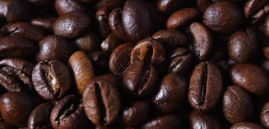

Where do you get Coffee Beans?
How to Roast Beans
Coffee beans can take fifteen minutes at a time to turn a bean into the small brown bean that is well known to coffee drinkers. Many things are considered like heat, air dlow, and time in order to create the right flavour for coffee beans. By changing these factors it changes the type of roast, the flavour of the brew, and the amount of caffeine.
Types of Beans
Arabica Beans
The most well known coffee bean. Arabica makes up approximatly 60% of coffee had globally. The most known flavour profile for Arabica is a sweet flavour which is referred to as caramel like.
Robusta Beans
Robusta coffee beans are typically found in Africa from the Canephora plant. Robusta is most known for espresso and instant coffee and it has a predominantly bitter taste.
Excelsa Beans
Excelsa has a minimal presence in roasting.It is considered a variety of Liberica but has a similar palette to Robusta. Excelsa is regarded as a lower quality bean which is grown in southeast Asia.
Liberica Beans
Liberica originated in West Africa. It is similarly minimal in coffee and is currently grown mostly in southeast Asia. The flavour profile for Liberica is compared to Jackfruit, Blackberry, and dark honey.